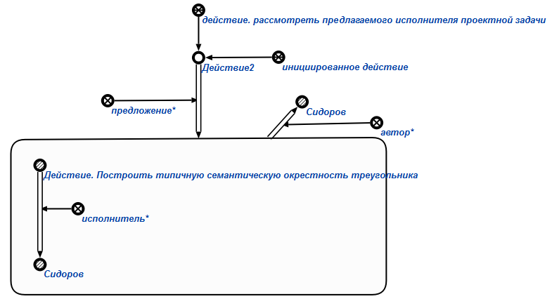

Задачей агента формирования предложения исполнителя проектного задания является формирование предложения* исполнителя* (некоторого пользователя) определенного проектного задания, который должен будет его разработать. Данный агент инициируется при условии появления в памяти вопросной конструкции, соответствующей действию. сформировать предложение исполнителя проектного задания. Первым аргументом действия является знак действия, соответствующий проектному заданию (на данный момент это только знаки действия. построить новый фрагмент для включения в базу знаний), вторым аргументом - знак пользователя, предлагаемого в качестве исполнителя*.
Возможные результаты работы агента:
- Если первый аргумент знака действия. сформировать предложение исполнителя проектного задания не является знаком действия. построить новый фрагмент для включения в базу знаний, то генерируется сообщение об ошибке (Wrong 1st parameter! It must be sign of action to build new fragment for including in knowledge base(action_to_build_new_piece_to_be_included_in_knowledge_base)).
- Если первый аргумент знака действия. сформировать предложение исполнителя проектного задания не является знаком пользователя, то выводится сообщение об ошибке (Wrong 2nd parameter! It must be user sign(element of ui_user)).
- Если пользователь, инициировавший выполнение агента, не является разработчиком, то генерируется сообщение "Access denied. User must be a developer."
- В случае успешного выполнения агента формируется предложение, содержащее исполнителя проектного задания (смотреть рисунок). Автором данного предложения становится пользователь, инициировавший выполнение агента. Генерируется и инициируется знак действия. рассмотреть предлагаемого исполнителя проектной задачи, а также, данный знак действия добавляется в текущие процессы развития компьютерной системы.
